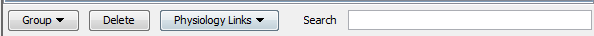

The buttons shown in this toolbar allow the user to perform various useful operations on selected entities within the Pathway Diagram view and the Pathway Objects table view.
This toolbar shows buttons allowing group, delete and link operations on selected
entities. A Search feature filters entities by string.

The user can perform various operations upon these entities, either on individually selected entities or multiple selected entities.
Importing. Single / multiple pathway entities can be imported into Physiology. Following this process, new species and/or reactions will be created within the BioModel. A permanent link will preserve the relationship between the BioModel and the Pathway entities. To do this, select one or more pathway entities and press the Physiology Links button, then use the option Import into physiology... In the Dialog box the user is allowed to edit the values for the compartment, ID and stoichiometric coefficient. The Location/Compartment column provides the drop-down list of compartments specified in Physiology. If no compartments are specified, it shows the default compartment c0. In the example below, the reactants are located in c1 while the product is located on the membrane. The reaction itself must be treated as a membrane reaction because at least one reaction participant is located on the membrane. ID is the name that will be assigned to the species or reaction in the Physiology. Once that step is finished the imported entities are displayed within the
Reaction Diagram View
and show a small 'L' mark inside nodes, indicating their linked status.
Once that step is finished the imported entities are displayed within the
Reaction Diagram View
and show a small 'L' mark inside nodes, indicating their linked status.
 Editing Physiology Links. The user can link/unlink every pathway object to every object in the physiology (reactions or species).
Selecting Physiology Links -> Edit Physiology Links... will start a dialog box with the list of all objects that can be linked
(species for a physical entity or reactions for an interaction). The user can create new links or deleted existing links by checking/unchecking
checkboxes in the dialog. As usual, Search field is provided for easy filtering.
Editing Physiology Links. The user can link/unlink every pathway object to every object in the physiology (reactions or species).
Selecting Physiology Links -> Edit Physiology Links... will start a dialog box with the list of all objects that can be linked
(species for a physical entity or reactions for an interaction). The user can create new links or deleted existing links by checking/unchecking
checkboxes in the dialog. As usual, Search field is provided for easy filtering.
 Grouping. Selecting multiple entities either
in a Pathway Diagram view or in a
Pathway Objects view
enables a Group button.
Grouping reduces clutter and allows the user to focus on the significant parts of the view. Consider
the view below:
The user may choose to group all the linked items (those marked with a 'L' letter) under a group
and all the participants of the other reaction under a second group. The entities can be selected
either in a Pathway Diagram view or in a
Pathway Objects view. The result will look as
follows:
Grouping. Selecting multiple entities either
in a Pathway Diagram view or in a
Pathway Objects view
enables a Group button.
Grouping reduces clutter and allows the user to focus on the significant parts of the view. Consider
the view below:
The user may choose to group all the linked items (those marked with a 'L' letter) under a group
and all the participants of the other reaction under a second group. The entities can be selected
either in a Pathway Diagram view or in a
Pathway Objects view. The result will look as
follows:

Existing groups can be grouped in even larger groups. Also groups can be broken down into their original subcomponents using the Ungroup option.
Deleting. Single / multiple entities can be deleted from the view using the Delete Selected button. Note
that linked entities cannot be deleted as long as the link exists. In the case of selections
where some entities can be deleted and some others can not, a warning dialog box will display
pertinent information. In the example below the user tried to delete two reactions one of which
is linked.